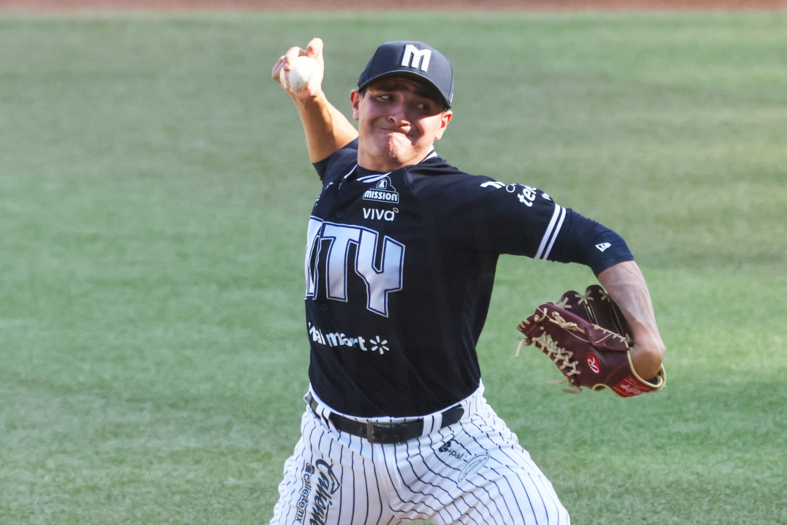
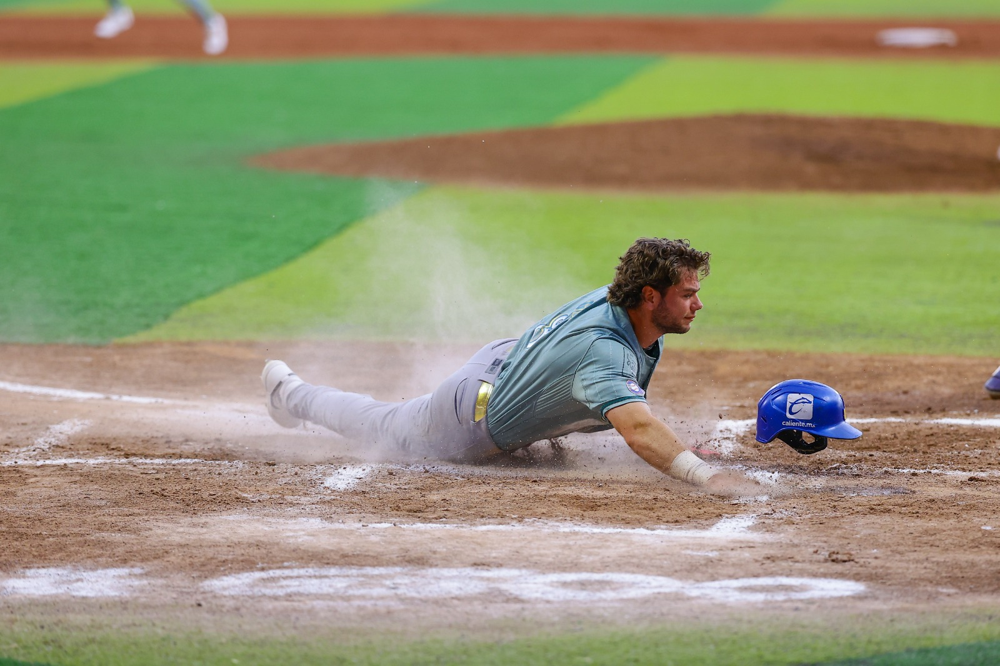

La primera liga profesional
La Liga Mexicana de verano organiza el talento del país y pone las bases de la competencia profesional.
Info · El béisbol de México
Detrás de cada entrada hay una historia. Descubre de dónde viene la pasión que se vive en el diamante.
Conocer la historia
Una misma afición
La Liga Mexicana de Beisbol y la Liga Mexicana del Pacífico reúnen ciudades, estadios y generaciones alrededor del mismo juego.
Entrada por entrada
Elige una etapa y recorre la historia del juego.
4 etapas
La Liga Mexicana de verano organiza el talento del país y pone las bases de la competencia profesional.
Nace la liga invernal, que más tarde se consolidaría como la Liga Mexicana del Pacífico.
La LMB y la LMP reúnen estadios, ciudades y aficiones distintas alrededor del mismo diamante.
México participa en la Serie del Caribe, el Clásico Mundial, los Juegos Olímpicos y torneos infantiles internacionales.

La historia sigue
Conoce a los equipos, reúne tus cartas favoritas y pon a prueba lo que sabes. Cada afición tiene su lugar en Zona Diamante.
Fotografía: Liga Mexicana de Beisbol.
¿Cuánto sabes?
Tu afición, en cartas